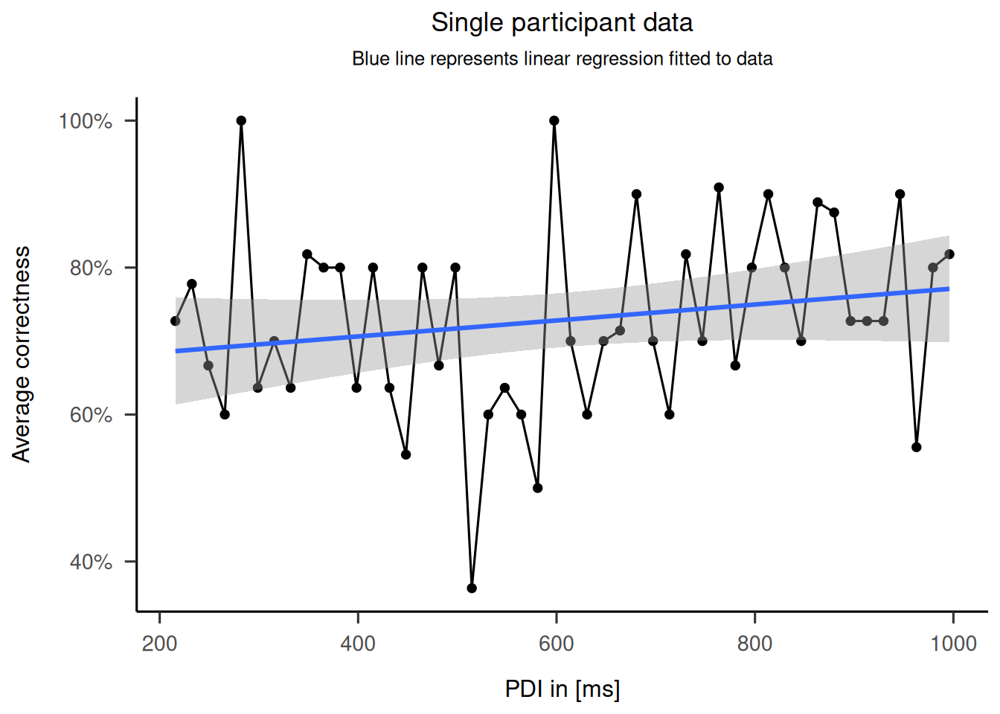
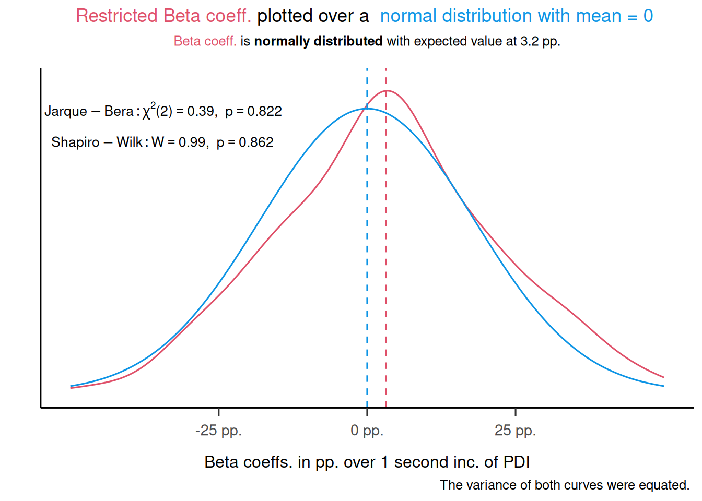
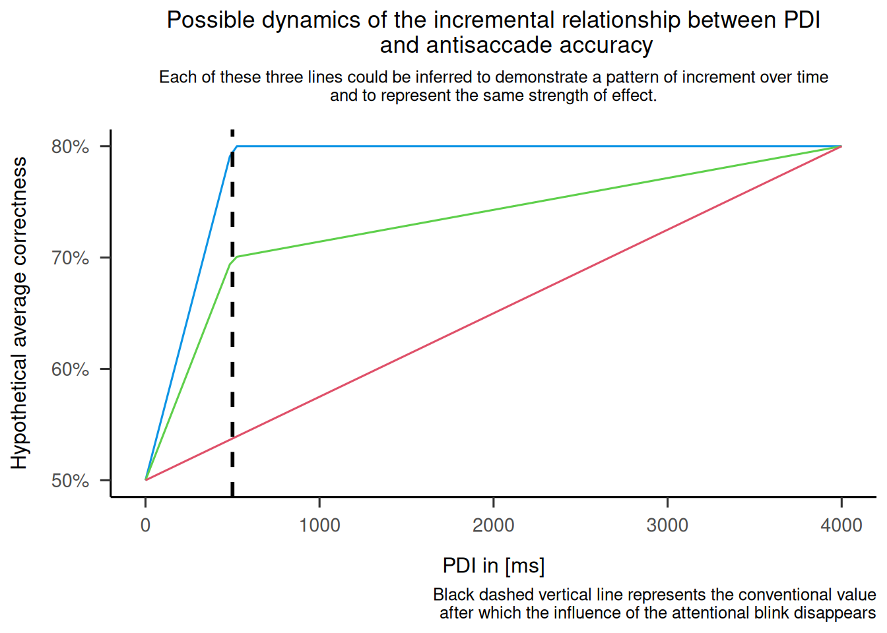
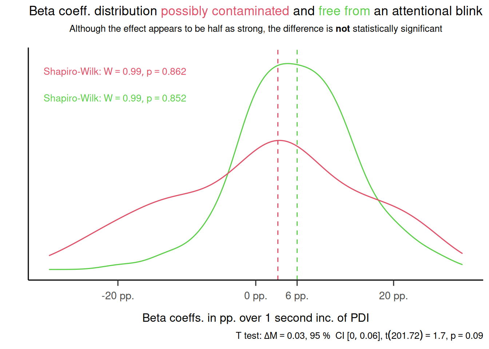

Trend Analysis
Does varying cue-stimulus interval affect the sensory discrimination performance in the antisaccade task?
DATA A
150 participants, CSI range 216-1000 with 16.(6) ms step
Fig 2. Single participant Data
Fig 3. Beta coeff distribution
beta_coeffs_full <- data.aggr |>
do(model = lm(mean_corr ~ t, data = .)) |>
mutate(beta = model$coefficients[[2]])
shapiro_test_full <- shapiro.test(beta_coeffs_full$beta)
jarque_bera_test_full <- jarque.bera.test(beta_coeffs_full$beta)
beta_coeffs_restricted <- data.aggr |>
filter(t > 600) |>
do(model = lm(mean_corr ~ t, data = .)) |>
mutate(beta = model$coefficients[[2]])
shapiro_test_resticted <- shapiro.test(beta_coeffs_restricted$beta)
jarque_bera_test_restricted <- jarque.bera.test(beta_coeffs_restricted$beta)shapiro_test <- shapiro_test_resticted
jarque_bera_test <- jarque_bera_test_restricted
beta_coeffs <- beta_coeffs_restricted
# One-sample t-test against mean 0
x <- beta_coeffs$beta
mu0 <- 0
alpha <- 0.05
# One-sample t-test (CI for the mean; with mu0=0 it's also the CI for mean difference)
res_t <- t.test(x, mu = mu0, alternative = "two.sided", conf.level = 1 - alpha)
# APA-style output
d <- effectsize::cohens_d(x, mu = mu0, ci = 1 - alpha) # Cohen's d and its CI
g <- effectsize::hedges_g(x, mu = mu0, ci = 1 - alpha) # Hedges' g (bias-corrected d)
# Minimal APA-style reporting
cat(sprintf(
"One-sample t(%d) = %.2f, p = %.3g; mean = %.4f (95%% CI: [%.4f, %.4f]).\n",
unname(res_t$parameter), unname(res_t$statistic), res_t$p.value,
unname(res_t$estimate), res_t$conf.int[1], res_t$conf.int[2]
))One-sample t(145) = 2.14, p = 0.0338; mean = 0.0032 (95% CI: [0.0002, 0.0062]).print(d) # pretty table with d and its 95% CICohen's d | 95% CI
------------------------
0.18 | [0.01, 0.34]print(g) # pretty table with g and its 95% CIHedges' g | 95% CI
------------------------
0.18 | [0.01, 0.34]# Create plain text strings (not TeX objects)
shapiro_latex <- paste0(
"Shapiro-Wilk: W == ",
round(shapiro_test$statistic, 2),
"*', '*~p == ",
signif(shapiro_test$p.value, digits = 3)
)
jarque_bera_latex <- paste0(
"Jarque-Bera: chi^2*'('*",
jarque_bera_test$parameter,
"*')' == ",
round(jarque_bera_test$statistic, 2),
"*', '*~p == ",
signif(jarque_bera_test$p.value, digits = 3)
)
ggplot() +
geom_density(data = beta_coeffs, aes(x = beta), color = "#DF5069") +
stat_function(
fun = dnorm,
n = 1000,
args = list(mean = 0, sd = sd(beta_coeffs$beta)),
color = "#0D94E5"
) +
theme_apa() +
labs(
title = "<span style='color:#DF5069;'>Restricted Beta coeff.</span> plotted over a
<span style='color:#0D94E5;'> normal distribution with mean = 0 </span>",
subtitle = "<span style='color:#DF5069;'>Beta coeff.</span>
is **normally distributed** with expected value at 3.2 pp.",
x = "Beta coeffs. in pp. over 1 second inc. of PDI",
y = "",
caption = paste0("The variance of both curves were equated. ")) +
theme(
plot.title = element_markdown(lineheight = 1.1),
plot.subtitle = element_markdown(lineheight = 1.1),
legend.position = "none"
) +
geom_vline(xintercept = mean(beta_coeffs$beta),
linetype = "dashed", color = "#DF5069") +
geom_vline(xintercept = 0,
linetype = "dashed", color = "#0D94E5") +
scale_x_continuous(
labels = percent_format(scale = 1000, suffix = " pp."),
breaks = c(-.025, .00, .025),
limits = c(-.05, .05)
) +
ylim(c(0, 24)) +
annotate(
"text",
x = -0.012,
y = 20.0,
label = shapiro_latex,
parse = TRUE,
hjust = 1.1,
vjust = 1.1,
size = 3.5
) +
annotate(
"text",
x = -0.0103,
y = 24,
label = jarque_bera_latex,
parse = TRUE,
hjust = 1.1,
vjust = 2,
size = 3.5
) +
theme(axis.text.y = element_blank(),
axis.ticks.y = element_blank())
Fig 4. Possible incremental dynamics
# Create a mock data frame with similar trends to the ones in the image
pdi <- seq(0, 4000, length.out = 100)
accuracy_blue <- ifelse(pdi <= 500, .50 + pdi * (.30/500), .80)
accuracy_green <- ifelse(pdi <= 500, .50 + pdi * (.20/500), .70 + (.10/3500) * (pdi - 500))
accuracy_red <- .50 + pdi * (.30/4000)
data <- data.frame(
PDI = pdi,
BlueLine = accuracy_blue,
GreenLine = accuracy_green,
RedLine = accuracy_red
)
# Create the plot
ggplot(data) +
geom_line(aes(x = PDI, y = BlueLine), color = "#0D94E5") +
geom_line(aes(x = PDI, y = GreenLine), color = "#5ECF4B") +
geom_line(aes(x = PDI, y = RedLine), color = "#DF5069") +
labs(
title = "Possible dynamics of the incremental relationship between PDI
and antisaccade accuracy",
subtitle = "Each of these three lines could be inferred to demonstrate a pattern of increment over time\nand to represent the same strength of effect.",
caption = "Black dashed vertical line represents the conventional value
after which the influence of the attentional blink disappears",
x = "PDI in [ms]",
y = "Hypothetical average correctness"
) +
geom_vline(xintercept = 500,
linetype = "dashed",
color = "black",
size = 1) +
theme_apa() +
scale_y_continuous(labels = scales::percent) +
theme(
plot.title = element_text(hjust = 0.5),
plot.subtitle = element_text(hjust = 0.5)
)Warning: Using `size` aesthetic for lines was deprecated in ggplot2 3.4.0.
ℹ Please use `linewidth` instead.
Fig 5. Beta for two ranges of PDI values
beta_coeffs_full <- data.aggr |>
do(model = lm(mean_corr ~ t, data = .)) |>
mutate(beta = model$coefficients[[2]])
beta_coeffs_no_blink <- data.aggr |>
filter(t > 600) |>
do(model = lm(mean_corr ~ t, data = .)) |>
mutate(beta = model$coefficients[[2]])
# Performing Shapiro-Wilk test
shapiro_test_full <- shapiro.test(beta_coeffs_full$beta)
shapiro_test_no_blink <- shapiro.test(beta_coeffs_no_blink$beta)
t_test <-
t.test(beta_coeffs_full$beta * 10, beta_coeffs_no_blink$beta * 10)
# Creating LaTeX strings for the test results
shapiro_full_latex <-
TeX(paste(
"Shapiro-Wilk: $W = ",
round(shapiro_test_full$statistic, 2),
", p = ",
signif(shapiro_test_full$p.value, digits = 3),
"$"
), output = "character")
shapiro_no_blink_latex <-
TeX(paste(
"Shapiro-Wilk: $W = ",
round(shapiro_test_no_blink$statistic, 2),
", p = ",
signif(shapiro_test_no_blink$p.value, digits = 3),
"$"
), output = "character")
beta_full_color = "#5ECF4B"
beta_restricted_color = "#DF5069"
p1 <- ggplot() +
geom_density(data = beta_coeffs_full, aes(x = beta), color = beta_full_color) +
geom_density(data = beta_coeffs_no_blink, aes(x = beta), color = beta_restricted_color) +
theme_apa() +
labs(
title = "Beta coeff. distribution
<span style='color:#DF5069;'>possibly contaminated</span>
and
<span style='color:#5ECF4B;'>free from</span>
an attentional blink",
subtitle = "Although the effect appears to be half as strong,
the difference is **not** statistically significant",
x = "Beta coeffs. in pp. over 1 second inc. of PDI",
y = "",
caption = TeX(paste0("T test: ", apa_print(t_test)$full))
) +
theme(
plot.title = element_markdown(lineheight = 1.1),
plot.subtitle = element_markdown(lineheight = 1.1),
legend.position = "none"
) +
geom_vline(
xintercept = mean(beta_coeffs_full$beta),
linetype = "dashed",
color = beta_full_color
) +
geom_vline(
xintercept = mean(beta_coeffs_no_blink$beta),
linetype = "dashed",
color = beta_restricted_color
) +
scale_x_continuous(
labels = percent_format(scale = 1000, suffix = " pp."),
breaks = c(-.02, 0, .006, .02),
limits = c(-.03, .03)
) +
ylim(c(0, 48)) +
annotate(
"text",
x = -0.008,
y = 40,
label = shapiro_full_latex,
parse = TRUE,
hjust = 1.1,
vjust = 1.1,
size = 3.5,
color = beta_full_color
) +
annotate(
"text",
x = -0.008,
y = 48,
label = shapiro_no_blink_latex,
parse = TRUE,
hjust = 1.1,
vjust = 2,
size = 3.5,
color = beta_restricted_color
) +
theme(axis.text.y = element_blank(), #remove y axis labels
axis.ticks.y = element_blank()) #remove y axis ticks)
ggsave("restricted_vs_full.png",p1, width = 8, height = 6, dpi = 600)Warning: Removed 20 rows containing non-finite outside the scale range
(`stat_density()`).p1Warning: Removed 20 rows containing non-finite outside the scale range
(`stat_density()`).